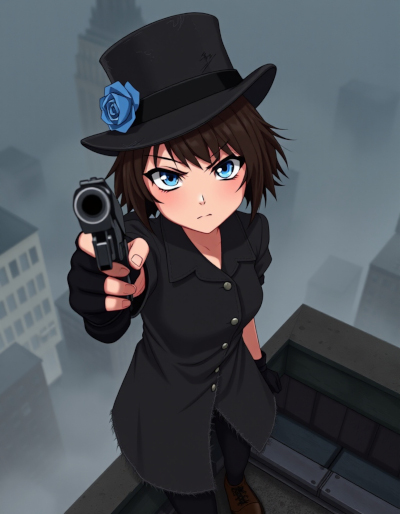
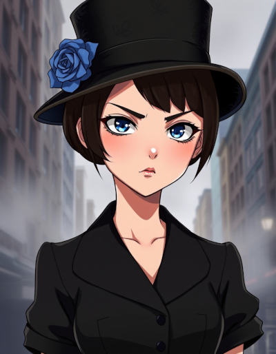
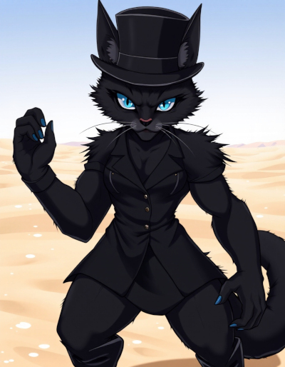
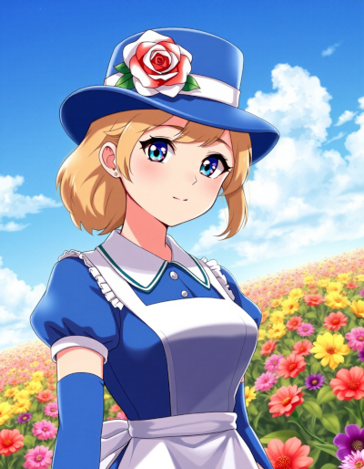
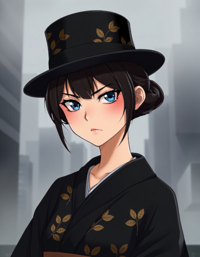
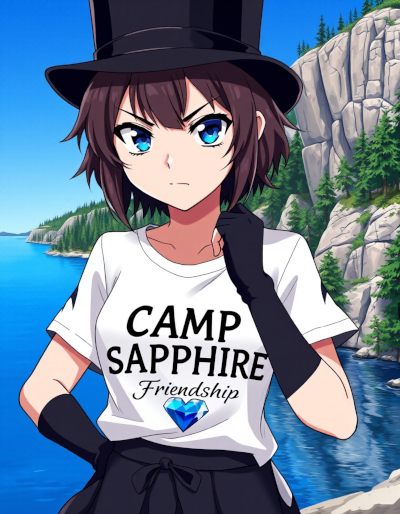

| Name | Artemis Watson |
|---|---|
| Known Aliases |
The Hunter The Boss Little Miss Little Miss Secret LMS Brat Girl Hey you! |
| Title/Rank | None |
| Birthplace | New York City, New York, United States |
| Occupation |
Demon Hunter Paranormal Investigator Witch Ashen Blade |
| Relationships |
Annmarie Nosset (Mother) Jake Watson (Father) Mashu’ra (Mother’s familiar) Reggie Stewart (Co-worker, deceased) Clayton Simmons (Co-worker) Lara Simmons (Co-worker, post 1973) Pride/Otto Vogerath (Enemy) |
| Appearances |
Novels Short Stories |
Artemis Watson
Artemis Watson is the protagonist in the series Ashen Blades, though more technically, she has no name.
She has brown hair, extremely blue eyes and an obsession with wearing the color black. She always wears the top hat she inherited from her father. She also perpetually wears gloves. For preference, she prefers elbow-length, fingerless gloves. This might initially seem to be a stylistic choice, but there are deeply psychological reasons for this.
She’s a half-demon, half-human girl that was born in 1897, in New York City. Her mother was a demon witch and her father was a demon hunter, more specifically an Ashen Blade, which is an organization dedicated to hunting and eliminating demons on Earth, for the sake of humanity. This gives her both the powers of a demon and a witch, two forms of magic that are stronger together.
Artemis looks entirely human at a glance, but that’s only because she always wears a skirt that hides her tail, which tends to twitch in time to her mood, much like that of a cat. Combined with the tendency of her eyes to easily reflect light, a little thought can bring one to the conclusion she has some traits in common with cats. This is because her mother had feline traits in demon form, though her demon form was the size and shape of a regular house cat.
She suffers from a curse from a demon that makes her unable to say anything other than “It’s a secret”, which tends to really irritate her. As such, she’s really embraced rude gestures as one of her favorite ways to communicate.
Due to the nature of demons and the way their true names can be used to compel them, Artemis was never actually named by her parents and all the ways that others refer to her are merely nicknames. Personally, she calls herself ‘the Hunter’, because she considers all demons prey and has made killing them all her mission in life.
The black market arms dealer she bought her guns from in the 1940’s gave her the nickname ‘Little Miss Secret’, based on the the only thing she can say and she was always fond of him, so she loves that nickname. Her friends often shorten it to just ‘LMS’.
During the third book, she was briefly able to speak her mind and her private detective partner chose to name her Artemis, rather than calling her ‘the Hunter’, because that sounded more like a title than a name to him. Her last name comes from her father, Jake Watson.
Artemis is mischievous, but often cheerful and smiles a lot, at least when she isn’t angry. Unfortunately, she’s often quite angry. She’s prone to playing practical jokes, especially with grumpy and serious people. With demons, her mischievous side becomes extremely cruel, because she hates them so much.
This is another area in which she takes after a cat and she sometimes tortures demons to death the way a cat plays with a mouse, though she’s grown slightly less cruel over time, because demons have sometimes escaped from her during such moments, leading to her giving them quicker deaths.
Special Powers
Artemis has the powers of both a demon and a witch, though she leans more heavily on her demon powers, because they came with useful instincts that tell her how to use them.
Her witch powers have been much slower to mature, but so far, she’s demonstrated fire magic hot enough to produce blue flame and smoke magic.
Her demon powers give her the ability to teleport between shadows, extreme physical durability, great strength and super-human speed. Hypothetically, she’ll also never die of old age.
One of her least favorite powers is the ability to consume demons to recharge her magical reserves, which is something demons sometimes do to each other, when they’re feeling peckish. She can’t stand the taste of them, however.
She combines smoke magic with demon magic to produce solid magical projections of objects stored in her hat.
The spirit of her mother acts as a living protective spell that that keeps the world at arms-length from Artemis, unless she chooses to let someone in.
Anyone that tries to touch her befalls a mysterious, magical accident brought on by probability manipulation magic. Anyone that intends her harm tends to experience a deadly accident. Demons are rarely killed by this effect, due to how durable they are, but it can still be quite damaging to them.
However, the spell isn’t perfect: indirect attacks and strikes can hit her.
The spirit of her dead father is bound to her hat, which she subconsciously turned into a portal to a pocket dimension. Her father manages manipulating space and sometimes even time for her, extending the level of control she can exert over the interior of her hat, as well as the precision with with she can manipulate the contents.
The space inside her hat is fairly large and she once stored an entire military jeep within it.
Her most powerful magical technique is a combination of witch fire magic and demonic void magic, which produces what’s known as the all-consuming flame. This is so hot, it glows in the ultraviolet spectrum and most anything that’s hit by it is burned to nothingness. Demons that are struck by this are effectively consumed by Artemis, giving her a short-term boost to her magic powers.
The all-consuming flame is one of the few ways she knows of to permanently kill a demon, who normally return to Hell when killed, then seek to return to Earth.
Favored Weapons
Artemis prefers guns that fire .45 rounds, because they have enough punch to put a hole through a skull, whish is the only way to kill a demon. She has an M1911 pistol and a Thompson sub-machine gun. The Tommy gun is her favorite.
In melee, she uses a Japanese wakizashi with a blue hilt wrapping and a tsuba, or hilt guard, in the shape of an open, blue rose. She often projects her flame powers onto the blade.
Before she got her first gun, she used a butcher’s knife.
Early Life and Growth {#early-life-growth)

At the age of three years old, in the year 1900, her parents were murdered by a demon in front of her, but due to her mother’s magic, their spirits were bound to her. Her mother, Annmarie, turned herself into a living, protective spell.
The father of Artemis was also killed, but his spirit was bound to his top hat, a favorite item. This is the same top hat Artemis wears.
Artemis has followed a rather unusual pattern of growth all her life: she doesn’t grow older until she emotionally matures, then her body changes fairly instantly, to match her mental state.
For example, when she was twenty-five years old, she looked ten, because in all that time, she never quite matured enough to progress any further.
In 1922, she had a chance encounter with a private detective, demon hunter and Ashen Blade named Reggie Stewart. At the time, she was little more than a remorseless killing machine that preyed on the demons of New York City, using a butcher’s knife.
In that first encounter, she stole one of Reggie’s pistols, her very first gun, which she’s never given up.
Upon leaning of the man’s dangerous job, she began following him and eventually realized she’d found a kindred spirit. They became partners and together, they really cleaned up the streets of New York.
While they were together, Artemis matured until she resembled a girl of fifteen years, though she remained short and petite, at only five feet tall.

Eventually, in 1942, Reggie was killed and the Ashen Blades assigned her a new detective partner: Clayton Simmons. She really didn’t mature much over the next few decades, until the two of them went to Vietnam, in 1972, to exterminate an arch-demon that had come to Earth.
While they were there, Artermis had a rough experience with the death of a solider and got human blood on her hands, leading to an emotional breakdown, but when she eventually recovered, she grew a little older.

In book three, the curse that prevents her from speaking her mind was briefly lifted and she was able to speak with her father. After that emotional experience, she once again grew a little older.
In book four, after the loss of a dear friend, the grieving process finally fully took her into adulthood, because she was forced to discard some very childish coping mechanisms in order to heal.
Psychology
Due to the hardships of being a half-demon and the trauma Artemis has experiences, she isn’t exactly mentally stable. In point of fact, she has multiple personalities.
The first is The Hunter, which is her base personality. The Hunter represents her ego.

The second is her inner demon, which she’s spent a lifetime fighting to contain, because it’s a murderous creature with no moral compass. This personality is more or less her Id, an emotional creature with no self-control.
The one time the inner demon gained full control of their body, she transformed into a humanoid cat monster absolutely brimming with muscle. This is more or less the demonic form of Artemis.
In that battle, the demon also publicly declared its name: The Eighth Deadly Sin, Willful Insanity. She goes by Insanity, for short.

During the climax of book four, Artemis was splashed with approximately an entire pint of LSD, which resulted in the emergence of a third personality, which calls herself Alice, due to a song that was playing at the time (White Rabbit by Jefferson Airplane). Due to how confused she was at the time, she took on an approximation of the appearance of Alice from Alice’s Adventures in Wonderland, blond hair and all.
Quite aside from this, Artemis occasionally hallucinates that she has blood on her hands, because she was there when Reggie died and got blood all over them, which is why she wears gloves. This was made worse in 1972, when her gloves got splashed with blood.
Travels
Artemis hates to travel, because she gets extremely motion sick in vehicles. However, she has visited a number of places, both in and out of the United States, including White Sands and Carlsbad Cavern, both in New Mexico, an undisclosed location that once hosted a summer camp, California, Kansas, Canada, The Amazon, Egypt, the bottom of the Mariana trench, Mount Everest, Vietnam, Tokyo in Japan, Alice Springs in Australia, just possibly Tibet, and a pocket dimension known as The Last Sanctuary.

Here’s a nice image of Artemis during her brief visit to Tokyo, while her team was taking a break from fighting the demons hiding in the jungles of Vietnam. Her clothes went native without her giving it much thought.

In 1986, she went undercover at a summer camp that was infested with demons. At the time, she was pretending to be a teenager, despite the fact she was old enough to be the grandmother of the teens that surrounded her. She got particularly cranky while she was there, because she doesn’t like to interact with teenagers.